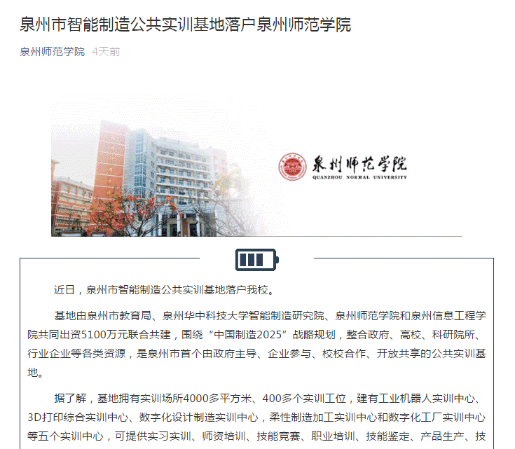

近日，泉州市智能制造公共实训基地落户泉州师范学校。
基地由泉州市教育局、泉州华中科技大学智能制造研究院、泉州师范学院和泉州信息工程学院共同出资5100万元联合共建，围绕“中国制造2025”战略规划，整合政府、高校、科研院所、行业企业等各类资源，是泉州市首个由政府主导、企业参与、校校合作、开放共享的公共实训基地。
据了解，基地拥有实训场所4000多平方米、400多个实训工位，建有工业机器人实训中心、3D打印综合实训中心、数字化设计制造实训中心，柔性制造加工实训中心和数字化工厂实训中心等五个实训中心，可提供实习实训、师资培训、技能竞赛、职业培训、技能鉴定、产品生产、技术研发等多种公共服务，面向全市开放共享。基地突出产学研合作协调发展模式，力求打造成为一个“高起点、高标准、高质量、高效益”的省市示范性公共实训基地。
基地建成后，将面向泉州市职业院校、企业和社会提供多种公共服务，实现我校智能制造人才培养、研发能力以及先进智能制造技术与地方的需求对接，合力打造校地共同体，更好地服务地方经济发展，进一步加快“福厦泉国家自主创新示范区”建设，推动泉州市“数控一代”示范工程的提质扩面，助力产业智能化转型升级。

（泉州师范学院公众号 20181202报道）
网址链接：https://mp.weixin.qq.com/s/45lD7XlP85oSUM2MuHahew